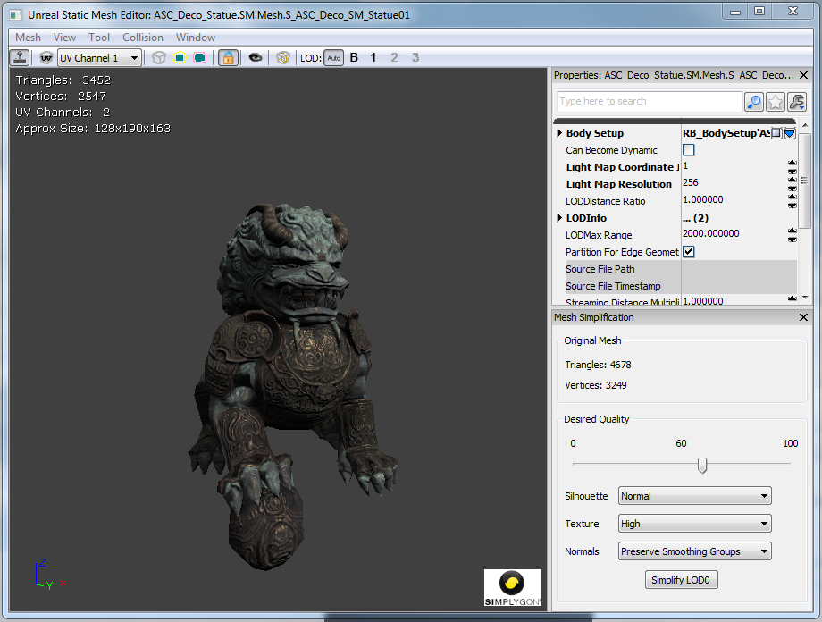
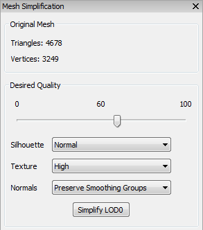
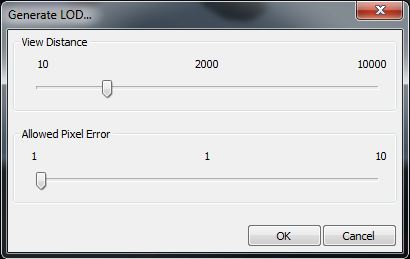

UDN
Search public documentation:
MeshSimplificationToolCH
English Translation
日本語訳
한국어
Interested in the Unreal Engine?
Visit the Unreal Technology site.
Looking for jobs and company info?
Check out the Epic games site.
Questions about support via UDN?
Contact the UDN Staff
日本語訳
한국어
Interested in the Unreal Engine?
Visit the Unreal Technology site.
Looking for jobs and company info?
Check out the Epic games site.
Questions about support via UDN?
Contact the UDN Staff
网格物体简化工具
工作原理
启动工具窗口

网格物体简化工具作为一个可以自由停靠的工具窗口内嵌到静态网格物体编辑器中。简化网格物体

Quality(质量). 与过去的工具不同，您现在可以指定一个质量标准，而不是指定切线数。编辑器使用期望的质量来计算网格物体的错误尺度。这个错误尺度阻止工具简化网格物体，以防止新的网格物体表面和源网格物体的表面偏离太远。这种方法的优点是这个工具可以智能地优化网格物体使它位于源网格物体的某特定偏离量之内，而不必在受到任何三角形限制时而停止。 Silhouette(轮廓). 您可以选择网格物体的轮廓的重要程度。您可以从 Normal（一般） 、 High(高级) 和 Highest(最高级) 选项中进行选择。选择较高级别的设置将会使得简化过程更好地保存网格物体的几何体形状，但是将会导致更多的三角形数量。 贴图 您可以选择贴图密度的重要程度。您可以从 Normal（一般） 、 High(高级) 和 Highest(最高级) 选项中进行选择。选择较高级别的设置将会使得简化过程避免贴图拉伸失真，但是会导致产生更多的三角形数量。 Normals(法线) 。您可以选择这四个选项中的其中一个来为简化网格物体生成法线：- Preserve Smoothing Groups（保留平滑组） ： 尝试保留原始网格物体的平滑组。
- Recompute Normals(重新计算法线) ： 允许Simplygon重新计算简化网格物体的法线。
- _Recompute Normals (Smooth)(重新计算法线(平滑))： 允许Simplygon重新计算简化网格物体的法线，生成平滑的边缘。
- Recompute Normals (Hard)(重新计算法线(尖锐)): 允许Simplygon重新计算简化网格物体的法线，生成尖锐的硬边。
生成LOD
 接下来，将会要求您为生成的LOD选择约束：
接下来，将会要求您为生成的LOD选择约束：

选择您想切换到这个LOD时所处的距离，然后选择允许这个LOD从源网格物体偏离多少个像素。最后，点击 OK（确定） 来生成LOD。 当生成LOD时编辑器将会为您计算质量尺度。所允许的像素误差告诉编辑器当网格物体在给定距离处跳动多少个像素时您可以适应。作为示例，如果您设置距离为2000，并且所允许的像素误差是1, 那么当从距离2000个单位处查看源网格物体时所生成的LOD偏离源网格物体的程度小于1个像素。这个计算量是近似值。它对后置缓冲的尺寸(假设为1280x720)和视场(假设90度)做了一些假设。这个近似值作为您开始调整所生成的LOD质量的起始点。 当生成LOD时，您或许想调整它的质量。简单地遵循以下指令来简化网格物体并确保您选择了您生成的LOD。 如果您想要根据距离和像素错误重新生成 LOD，那么您可以通过在 Mesh（网格物体） 菜单中选择 Generate LOD（生成 LOD） ，然后选择替换这个 LOD：
简化多个网格物体
 选择一个质量等级并单击 OK（确定）。所有选中的网格物体都将被简化。批处理完成后，您可能希望调节单个网格物体的质量等级。
警告：网格物体资源本身也被简化。这个变化将会影响所有实例，其中包括那些可能更靠近相机的实例。它也会影响其他贴图中的实例。
选择一个质量等级并单击 OK（确定）。所有选中的网格物体都将被简化。批处理完成后，您可能希望调节单个网格物体的质量等级。
警告：网格物体资源本身也被简化。这个变化将会影响所有实例，其中包括那些可能更靠近相机的实例。它也会影响其他贴图中的实例。